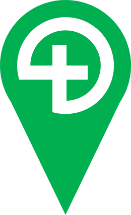
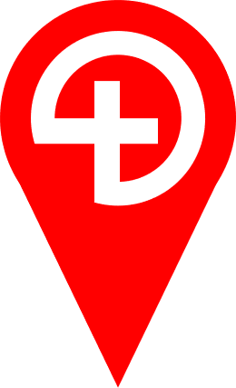

<!DOCTYPE html>
<html>
<head>
	
	<title>BASICS Dorset Incidents</title>
	<link rel="stylesheet" href="css/leaflet.css" />
	<meta name="viewport" content="width=device-width, initial-scale=1.0">
	<link rel="stylesheet" href="css/screen.css" />
	<link rel="stylesheet" href="css/MarkerCluster.css" />
	<link rel="stylesheet" href="css/MarkerCluster.Default.css" />
	<script src="js/leaflet.js"></script>
	<script src="js/TileLayer.Grayscale.js"></script>
	<script src="js/leaflet.markercluster-src.js"></script>
	<script type="text/javascript" src="data/Attend2020.geojson"></script>
	<script type="text/javascript" src="data/Attend2019.geojson"></script>
	<script type="text/javascript" src="data/Attend2018.geojson"></script>
	<script type="text/javascript" src="data/Dorset.geojson"></script>
	<script type="text/javascript" src="data/BCP.geojson"></script>
</head>
	
<body>

	<div id="map">

	<script type="text/javascript">

		var OSM = L.tileLayer('https://{s}.tile.osm.org/{z}/{x}/{y}.png', {
				maxZoom: 25,
				minZoom: 7,
				attribution: '&copy; <a href="http://osm.org/copyright">OpenStreetMap</a> contributors'
			}),
			latlng = L.latLng(50.75849584891938, -1.5506081125996178);

		var Terrain = L.tileLayer('http://mt0.google.com/vt/lyrs=p&hl=en&x={x}&y={y}&z={z}', {
				maxZoom: 25,
				minZoom: 7,
				attribution: '&copy; <a href="http://osm.org/copyright">Google</a> contributors'
			}),
			latlng = L.latLng(50.7, -1.9);

		var tilesGrey = L.tileLayer('http://mt0.google.com/vt/lyrs=p&hl=en&x={x}&y={y}&z={z}', {
				maxZoom: 25,
				minZoom: 7,
				attribution: '&copy; <a href="http://osm.org/copyright">OpenStreetMap</a> contributors'
			}),
			latlng = L.latLng(50.75849584891938, -1.5506081125996178);

		var map = L.map('map', {center: latlng, zoom: 9, layers: [Terrain]});

		//Marker Icon
		var TraIcon = L.icon({
    		iconUrl: 'markers/job-trauma.png',
    		shadowUrl: 'markers/job-shadow.png',

    		iconSize:     [25, 41], // size of the icon
    		shadowSize:   [25, 41], // size of the shadow
    		iconAnchor:   [12, 41], // point of the icon which will correspond to marker's location
    		shadowAnchor: [3, 40],  // the same for the shadow
    		popupAnchor:  [-3, -76] // point from which the popup should open relative to the iconAnchor
		});

		var MedIcon = L.icon({
    		iconUrl: 'markers/job-medic.png',
    		shadowUrl: 'markers/job-shadow.png',

    		iconSize:     [25, 41], // size of the icon
    		shadowSize:   [25, 41], // size of the shadow
    		iconAnchor:   [12, 41], // point of the icon which will correspond to marker's location
    		shadowAnchor: [3, 40],  // the same for the shadow
    		popupAnchor:  [-3, -76] // point from which the popup should open relative to the iconAnchor
		});


//2020 incidents
		var Jobs2020 = new L.GeoJSON(ATTEND2020, {
		pointToLayer: (feature, latlng) => {
		if (feature.properties.TYPE === "TRAUMA") {
        		return L.marker(latlng, {icon: TraIcon});
		} else {
      			return L.marker(latlng, {icon: MedIcon});
		}
		},
    		});

		var Cluster2020= L.markerClusterGroup({maxClusterRadius:60, disableClusteringAtZoom:13});
		Cluster2020.addLayer(Jobs2020);
		//map.addLayer(Cluster2020);

//2019 incidents
		var Jobs2019 = new L.GeoJSON(ATTEND2019, {
      		pointToLayer: (feature, latlng) => {
		if (feature.properties.TYPE === "TRAUMA") {
        		return L.marker(latlng, {icon: TraIcon});
		} else {
      			return L.marker(latlng, {icon: MedIcon});
		}
		},
    		});
		var Cluster2019= L.markerClusterGroup({maxClusterRadius:60, disableClusteringAtZoom:13});
		Cluster2019.addLayer(Jobs2019);
		//map.addLayer(Cluster2019);

//2018 incidents
		var Jobs2018 = new L.GeoJSON(ATTEND2018, {
      		pointToLayer: (feature, latlng) => {
		if (feature.properties.TYPE === "TRAUMA") {
        		return L.marker(latlng, {icon: TraIcon});
		} else {
      			return L.marker(latlng, {icon: MedIcon});
		}
		},
    		});
		var Cluster2018= L.markerClusterGroup({maxClusterRadius:60, disableClusteringAtZoom:13});
		Cluster2018.addLayer(Jobs2018);
		//map.addLayer(Cluster2018);

//All-time incidents
		var ClusterAll= L.markerClusterGroup({maxClusterRadius:60, disableClusteringAtZoom:13});
		ClusterAll.addLayer(Jobs2020)
		ClusterAll.addLayer(Jobs2019)
		ClusterAll.addLayer(Jobs2018);
		map.addLayer(ClusterAll);


		function dorset(feature) {
    		return {
        	fillColor: 'yellow',
       	 	weight: 3,
        	opacity: 1,
        	color: 'yellow',  //Outline color
       		fillOpacity: 0.2
    		};
		}

		function bcpcolor(feature) {
    		return {
        	fillColor: 'purple',
       	 	weight: 3,
        	opacity: 1,
        	color: 'white',  //Outline color
       		fillOpacity: 0.2
    		};
		}

		
		var imageUrl = 'data/dorsetpop.png',
    		imageBounds = [[50.512778, -2.9616667], [51.081111, -1.681389]];

		var Density = L.imageOverlay(imageUrl, imageBounds)
		var PopDen = L.layerGroup([Density,tilesGrey])

		var DORborder = new L.GeoJSON(DORSET,{style: dorset});
		var BCPborder = new L.GeoJSON(BCP,{style: bcpcolor});
		var Borders = L.layerGroup([DORborder,BCPborder]);
		Borders.addTo(map)

		var baseMaps = {
    		"2020": Cluster2020,
		"2019": Cluster2019,
		"2018": Cluster2018,
		"All": ClusterAll
		};

		var overlayMaps = {
		"Borders": Borders,
		"Population": Density
		};

		L.control.layers(baseMaps, overlayMaps).addTo(map);

	var legend = L.control({position: 'bottomleft'});
	legend.onAdd = function (map) {
	var div = L.DomUtil.create('div', 'legend');
	div.innerHTML +=  '<p><b>Locations Approximate</p>   Medical      Trauma<br>'

    return div;
};

legend.addTo(map);

L.control.scale({position: 'bottomright'}).addTo(map);

	
	</script>
</div>

</body>
</html>
